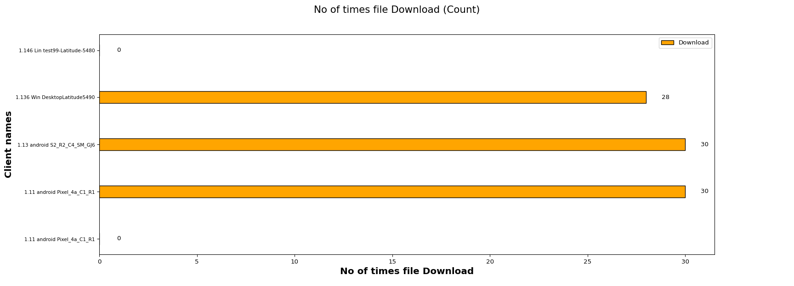
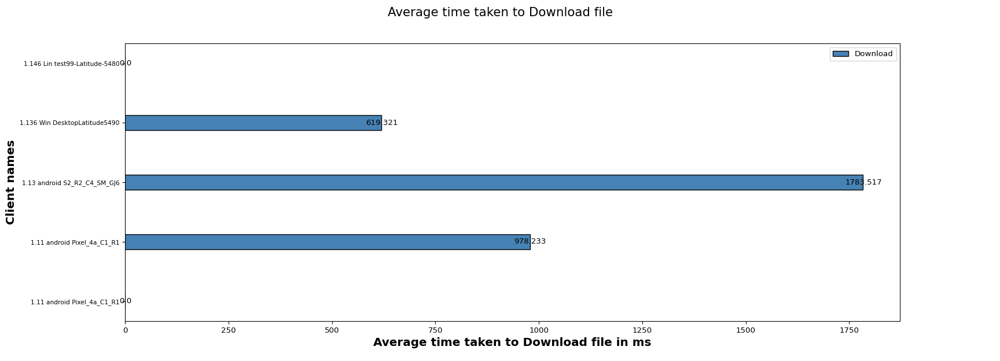

| Test Setup Information |
|
||||||||||||||||||||||||||||||||||||
The HTTP Download Test is designed to verify that N clients connected on specified band can download some amount of file from HTTP server and measures the time taken by the client to Download the file.
The below graph represents number of times a file downloads for each client. X- axis shows “No of times file downloads and Y-axis shows Client names.

The below graph represents average time taken to download for each client . X- axis shows “Average time taken to download a file ” and Y-axis shows Client names.

This Table will provide you information of the minimum, maximum and the average time taken by clients to download a webpage in seconds
| Minimum | Maximum | Average |
|---|---|---|
| 0.0 | 1.8 | 0.7 |
| Clients | MAC | Channel | SSID | Mode | No of times File downloaded | Average time taken to Download file (ms) | Bytes-rd (Mega Bytes) | Rx Rate (Mbps) | Failed url's |
|---|---|---|---|---|---|---|---|---|---|
| 1.11 android Pixel_4a_C1_R1 | 3a:3b:b5:f3:1c:28 | 6 | xiab_2G_WPA2 | 802.11abgn 20 | 0 | 0.000 | 0.0 | 0.0000 | 0 |
| 1.11 android Pixel_4a_C1_R1 | 02:00:00:00:00:00 | 6 | xiab_2G_WPA2 | 802.11abgn 20 | 30 | 978.233 | 150.0 | 6.8082 | 0 |
| 1.13 android S2_R2_C4_SM_GJ6 | fe:80:53:eb:57:18 | 6 | xiab_2G_WPA2 | AUTO 20 | 30 | 1783.517 | 150.0 | 6.7707 | 0 |
| 1.136 Win DesktopLatitude5490 | dc:8b:28:28:d7:64 | 6 | xiab_2G_WPA2 | 802.11abgn 20 1x1 | 28 | 619.321 | 140.0 | 6.2854 | 0 |
| 1.146 Lin test99-Latitude-5480 | 00:24:d6:1a:20:f | 6 | xiab_2G_WPA2 | 802.11bgn 40 2x2 | 0 | 0.000 | 0.0 | 0.0000 | 0 |